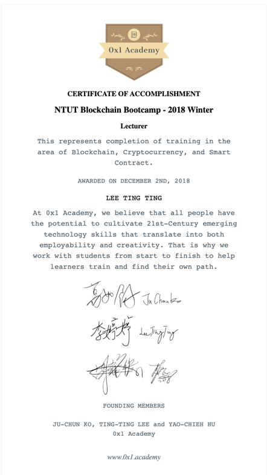

<!DOCTYPE html>
<html>
<head>

    <!-- Document Settings -->
    <meta charset="utf-8" />
    <meta http-equiv="X-UA-Compatible" content="IE=edge" />

    <!-- Base Meta -->
    <!-- dynamically fixing the title for tag/author pages -->


    <title>區塊鏈 3.0 應用起飛</title>
    <meta name="HandheldFriendly" content="True" />
    <meta name="viewport" content="width=device-width, initial-scale=1.0" />
    <!-- Styles'n'Scripts -->
    <link rel="stylesheet" type="text/css" href="/fzth/assets/built/screen.css" />
    <link rel="stylesheet" type="text/css" href="/fzth/assets/built/screen.edited.css" />
    <link rel="stylesheet" type="text/css" href="/fzth/assets/built/syntax.css" />
    <!-- highlight.js -->
    <link rel="stylesheet" href="//cdnjs.cloudflare.com/ajax/libs/highlight.js/9.12.0/styles/default.min.css">
    <style>.hljs { background: none; }</style>

    <!--[if IE]>
        <style>
            p, ol, ul{
                width: 100%;
            }
            blockquote{
                width: 100%;
            }
        </style>
    <![endif]-->
    
    <!-- This tag outputs SEO meta+structured data and other important settings -->
    <meta name="description" content="面對於一項不專業的項目，從零開始都是十分的不容易的。<br>From Zero To Hero 將會帶各位「從零開始直到成為英雄」。" />
    <link rel="shortcut icon" href="/fzth/assets/images/fzth.png" type="image/png" />
    <link rel="canonical" href="/fzth/%E5%8D%80%E5%A1%8A%E9%8F%88-3.0-%E6%87%89%E7%94%A8%E8%B5%B7%E9%A3%9B" />
    <meta name="referrer" content="no-referrer-when-downgrade" />

     <!--title below is coming from _includes/dynamic_title-->
    <meta property="og:site_name" content="FromZeroToHero-Blockchain" />
    <meta property="og:type" content="website" />
    <meta property="og:title" content="區塊鏈 3.0 應用起飛" />
    <meta property="og:description" content="你們可能會覺得很奇怪，為什麼一開始要講區塊鏈 3.0 呢？ 是不是還有區塊鏈 1.0 和 2.0 呢？經過昨天我們已經知道區塊鏈是怎麼組成的 從零開始的區塊鏈 圖1 區塊鏈組成。 那今天就來聊聊大家都想聽的區塊鏈應用。 目錄 區塊鏈 3.0 小結 參考資料 區塊鏈 3.0 你們可能會覺得很奇怪，為什麼一開始要講區塊鏈 3.0 呢？ 是不是還有區塊鏈 1.0 和 2.0 呢？ 沒錯 XD 那本篇會先講目前既有之應用，區塊鏈的背景故事留在下篇介紹。 圖2 區塊鏈應用時代。 在去年 IOTA 剛出世的時候，大家都說區塊鏈 3.0 一定是 IOTA，認為IOTA技術可以解決現有區塊鏈的問題 .. 圖3 區塊鏈不可能三角。 但這不是我們今天的主軸，我們 3.0 最主要就是要聊能夠深耕世界的應用，我們也稱這種應用叫做 Dapp 。 Dapp 有著智能合約和區塊鏈之應用誕生，區塊鏈的應用發展突然十分的廣泛。 那我會介紹一些現在的應用，且講一下優缺點。 食安區塊鏈" />
    <meta property="og:url" content="/fzth/%E5%8D%80%E5%A1%8A%E9%8F%88-3.0-%E6%87%89%E7%94%A8%E8%B5%B7%E9%A3%9B" />
    <meta property="og:image" content="/fzth/assets/images/panda-13.png" />
    <meta property="article:publisher" content="https://www.facebook.com/" />
    <meta property="article:author" content="https://www.facebook.com/" />
    <meta property="article:published_time" content="2019-12-02T00:00:00+00:00" />
    <meta property="article:modified_time" content="2019-12-02T00:00:00+00:00" />
    <meta property="article:tag" content="Blockchain" />
    <meta name="twitter:card" content="summary_large_image" />
    <meta name="twitter:title" content="區塊鏈 3.0 應用起飛" />
    <meta name="twitter:description" content="你們可能會覺得很奇怪，為什麼一開始要講區塊鏈 3.0 呢？ 是不是還有區塊鏈 1.0 和 2.0 呢？經過昨天我們已經知道區塊鏈是怎麼組成的 從零開始的區塊鏈 圖1 區塊鏈組成。 那今天就來聊聊大家都想聽的區塊鏈應用。 目錄 區塊鏈 3.0 小結 參考資料 區塊鏈 3.0 你們可能會覺得很奇怪，為什麼一開始要講區塊鏈 3.0 呢？ 是不是還有區塊鏈 1.0 和 2.0 呢？ 沒錯 XD 那本篇會先講目前既有之應用，區塊鏈的背景故事留在下篇介紹。 圖2 區塊鏈應用時代。 在去年 IOTA 剛出世的時候，大家都說區塊鏈 3.0 一定是 IOTA，認為IOTA技術可以解決現有區塊鏈的問題 .. 圖3 區塊鏈不可能三角。 但這不是我們今天的主軸，我們 3.0 最主要就是要聊能夠深耕世界的應用，我們也稱這種應用叫做 Dapp 。 Dapp 有著智能合約和區塊鏈之應用誕生，區塊鏈的應用發展突然十分的廣泛。 那我會介紹一些現在的應用，且講一下優缺點。 食安區塊鏈" />
    <meta name="twitter:url" content="/fzth/" />
    <meta name="twitter:image" content="/fzth/assets/images/panda-13.png" />
    <meta name="twitter:label1" content="Written by" />
    <meta name="twitter:data1" content="FromZeroToHero-Blockchain" />
    <meta name="twitter:label2" content="Filed under" />
    <meta name="twitter:data2" content="Blockchain" />
    <meta name="twitter:site" content="@" />
    <meta name="twitter:creator" content="@" />
    <meta property="og:image:width" content="1400" />
    <meta property="og:image:height" content="933" />

    <script type="application/ld+json">
{
    "@context": "https://schema.org",
    "@type": "Website",
    "publisher": {
        "@type": "Organization",
        "name": "FromZeroToHero-Blockchain",
        "logo": "/fzth/assets/images/fzth.png"
    },
    "url": "/fzth/%E5%8D%80%E5%A1%8A%E9%8F%88-3.0-%E6%87%89%E7%94%A8%E8%B5%B7%E9%A3%9B",
    "image": {
        "@type": "ImageObject",
        "url": "/fzth/assets/images/panda-13.png",
        "width": 2000,
        "height": 666
    },
    "mainEntityOfPage": {
        "@type": "WebPage",
        "@id": "/fzth/%E5%8D%80%E5%A1%8A%E9%8F%88-3.0-%E6%87%89%E7%94%A8%E8%B5%B7%E9%A3%9B"
    },
    "description": "你們可能會覺得很奇怪，為什麼一開始要講區塊鏈 3.0 呢？ 是不是還有區塊鏈 1.0 和 2.0 呢？經過昨天我們已經知道區塊鏈是怎麼組成的 從零開始的區塊鏈 圖1 區塊鏈組成。 那今天就來聊聊大家都想聽的區塊鏈應用。 目錄 區塊鏈 3.0 小結 參考資料 區塊鏈 3.0 你們可能會覺得很奇怪，為什麼一開始要講區塊鏈 3.0 呢？ 是不是還有區塊鏈 1.0 和 2.0 呢？ 沒錯 XD 那本篇會先講目前既有之應用，區塊鏈的背景故事留在下篇介紹。 圖2 區塊鏈應用時代。 在去年 IOTA 剛出世的時候，大家都說區塊鏈 3.0 一定是 IOTA，認為IOTA技術可以解決現有區塊鏈的問題 .. 圖3 區塊鏈不可能三角。 但這不是我們今天的主軸，我們 3.0 最主要就是要聊能夠深耕世界的應用，我們也稱這種應用叫做 Dapp 。 Dapp 有著智能合約和區塊鏈之應用誕生，區塊鏈的應用發展突然十分的廣泛。 那我會介紹一些現在的應用，且講一下優缺點。 食安區塊鏈"
}
    </script>

    <!-- <script type="text/javascript" src="https://demo.ghost.io/public/ghost-sdk.min.js?v=724281a32e"></script>
    <script type="text/javascript">
    ghost.init({
    	clientId: "ghost-frontend",
    	clientSecret: "f84a07a72b17"
    });
    </script> -->

    <meta name="generator" content="Jekyll 3.6.2" />
    <link rel="alternate" type="application/rss+xml" title="區塊鏈 3.0 應用起飛" href="/fzth/feed.xml" />


</head>
<body class="post-template">

    <div class="site-wrapper">
        <!-- All the main content gets inserted here, index.hbs, post.hbs, etc -->
        <!-- default -->

<!-- The tag above means: insert everything in this file
into the {body} of the default.hbs template -->

<header class="site-header outer">
    <div class="inner">
        <nav class="site-nav">
    <div class="site-nav-left">
        
            
                <a class="site-nav-logo" href="/fzth/"></a>
            
        
        
            <ul class="nav" role="menu">
    <li class="nav-home" role="menuitem"><a href="/fzth/">Home</a></li>
    <li class="nav-about" role="menuitem"><a href="/fzth/about/">About FZTH</a></li>
    <li class="nav-blockchain" role="menuitem"><a href="/fzth/tag/blockchain/">blockchain</a></li>
    <li class="nav-tech" role="menuitem"><a href="/fzth/tag/tech/">tech</a></li>
    <li class="nav-industry" role="menuitem"><a href="/fzth/tag/industry/">industry</a></li>
    <li class="nav-github" role="menuitem"><a href="https://github.com/FZTH-Blockchain">Github</a></li>
</ul>

        
    </div>
    <div class="site-nav-right">
        <div class="social-links">
            
            
        </div>
        
    </div>
</nav>

    </div>
</header>

<!-- Everything inside the #post tags pulls data from the post -->
<!-- #post -->

<main id="site-main" class="site-main outer" role="main">
    <div class="inner">

        <article class="post-full post ">

            <header class="post-full-header">
                <section class="post-full-meta">
                    <time class="post-full-meta-date" datetime=" 2 December 2019"> 2 December 2019</time>
                    
                        <span class="date-divider">/</span>
                        
                            
                               <a href='/fzth/tag/blockchain/'>BLOCKCHAIN</a>
                            
                        
                    
                </section>
                <h1 class="post-full-title">區塊鏈 3.0 應用起飛</h1>
            </header>

            
            <figure class="post-full-image" style="background-image: url(/fzth/assets/images/panda-13.png)">
            </figure>
            

            <section class="post-full-content">
                <div class="kg-card-markdown">
                    <blockquote>
  <p>你們可能會覺得很奇怪，為什麼一開始要講區塊鏈 3.0 呢？
是不是還有區塊鏈 1.0 和 2.0 呢？經過昨天我們已經知道區塊鏈是怎麼組成的</p>
</blockquote>

<p><a href="https://fzth-blockchain.github.io/fzth/%E5%BE%9E%E9%9B%B6%E9%96%8B%E5%A7%8B%E7%9A%84%E5%8D%80%E5%A1%8A%E9%8F%88">從零開始的區塊鏈</a></p>

<div align="center">
    
</div>

<center><strong>圖1 區塊鏈組成。</strong></center>

<h2 id="那今天就來聊聊大家都想聽的區塊鏈應用">那今天就來聊聊大家都想聽的區塊鏈應用。</h2>

<blockquote>
  <p>目錄</p>
  <ul>
    <li>區塊鏈 3.0</li>
    <li>小結</li>
    <li>參考資料</li>
  </ul>
</blockquote>

<hr />
<h2 id="區塊鏈-30">區塊鏈 3.0</h2>
<p>你們可能會覺得很奇怪，為什麼一開始要講區塊鏈 3.0 呢？
是不是還有區塊鏈 1.0 和 2.0 呢？
沒錯 XD 那本篇會先講目前既有之應用，區塊鏈的背景故事留在下篇介紹。</p>

<div align="center">
    
</div>

<center><strong>圖2 區塊鏈應用時代。</strong></center>

<p>在去年 <a href="https://www.iota.org/">IOTA</a> 剛出世的時候，大家都說區塊鏈 3.0 一定是 IOTA，認為IOTA技術可以解決現有區塊鏈的問題 ..</p>

<div align="center">
    
</div>

<center><strong>圖3 區塊鏈不可能三角。</strong></center>

<p>但這不是我們今天的主軸，我們 3.0 最主要就是要聊能夠深耕世界的應用，我們也稱這種應用叫做 Dapp 。</p>

<h3 id="dapp">Dapp</h3>

<p>有著智能合約和區塊鏈之應用誕生，區塊鏈的應用發展突然十分的廣泛。
那我會介紹一些現在的應用，且講一下優缺點。</p>

<blockquote>
  <p>食安區塊鏈</p>
</blockquote>

<p>利用區塊鏈來做紀錄，將產銷履歷之紀錄透明化。</p>

<ul>
  <li>優點：食品的生產履歷透明化，可以讓消費者更好了解自己購買的食品過程，且不被竄改。</li>
  <li>缺點：每一筆記錄之手續費過高;若第一筆紀錄的內容本身就有誤，那此紀錄就是無用紀錄。</li>
</ul>

<div align="center">
    
</div>

<center><strong>圖4 食安區塊鏈。</strong></center>

<blockquote>
  <p>證書上鏈</p>
</blockquote>

<p><a href="https://www.facebook.com/TuringCerts-%E5%9C%96%E9%9D%88%E8%AD%89%E6%9B%B8-101585707884659/">圖靈證書</a>由台灣團隊 <a href="https://turingchain.tech/">Turing Chain</a> 開發，將證書上鏈打擊假履歷和學歷。</p>

<ul>
  <li>優點：公開紀錄履歷、學歷不可被竄改，透過區塊鏈特性可以在特定條件再提供自己的履歷/學歷。</li>
  <li>缺點：一樣是源頭問題，當源頭有錯誤所有的內容都會被審視。</li>
</ul>

<div align="center">
    
</div>

<center><strong>圖5 圖靈鏈證書 0x1</strong></center>

<blockquote>
  <p>區塊鏈卡牌遊戲</p>
</blockquote>

<p>有著區塊鏈爐石戰記之稱的 <a href="https://godsunchained.info/">Gods Unchained</a>，透過將卡牌上鏈且採用 ERC721 標準賦予卡牌全新的價值，且可以交換。</p>

<ul>
  <li>優點：算是一種區塊鏈和現實遊戲中的虛實整合，讓虛擬中的卡牌有了定位和價值。</li>
  <li>缺點：除了卡片為 ERC721 購買卡牌及交易可以用以太幣以外，不清楚哪裡用了區塊鏈。</li>
</ul>

<div align="center">
    
</div>

<center><strong>圖6 Gods Unchained</strong></center>

<blockquote>
  <p>區塊鏈打擊假新聞</p>
</blockquote>

<p>台灣團隊 <a href="https://www.facebook.com/profile.php?id=2397871380492872">ASMOND</a> 以打擊假新聞為發想之POC - <a href="https://medium.com/asmond/%E7%B4%90%E7%B4%84%E6%99%82%E5%A0%B1%E6%8E%A1%E7%94%A8%E5%8D%80%E5%A1%8A%E9%8F%88%E6%89%93%E6%93%8A%E5%81%87%E6%96%B0%E8%81%9E-7870ae7a7bad">White Box</a>。</p>

<ul>
  <li>優點：透過人工智能之驗證及判斷結合區塊鏈之不可篡改特性，使得每篇新聞之信效度將會大幅提升。</li>
  <li>缺點：仍然有許多人不覺得假新聞是假新聞;區塊鏈之成本過高;人工智能之數據量需要充足且符合預期。</li>
</ul>

<div align="center">
    
</div>

<center><strong>圖7 WhiteBox</strong></center>

<blockquote>
  <p>博弈遊戲
已博弈遊戲著名的 Dapp 那就是我們風靡一時的 Fomo3d。
現在 Fomo3d 的函式庫和內容，都有人 Release 出來，有興趣的朋友可以自行前去觀賞。</p>
</blockquote>

<ul>
  <li>優缺點 ：資金盤採用區塊鏈，很潮。</li>
</ul>

<div align="center">
    
</div>

<center><strong>圖8 fomo3d</strong></center>

<blockquote>
  <p>鏈上公益計劃</p>
</blockquote>

<p>阿里巴巴則希望借著「鏈上公益計劃」打造出最純粹、透明的公益。區塊鏈技術具有去中心化、透明度高、信息不可篡改等特性，可以說是完美滿足了公益領域的需求。</p>

<div align="center">
    
</div>

<center><strong>圖9 鏈上公益計劃</strong></center>

<hr />
<h2 id="小結">小結</h2>

<p>根據上述的許多創意和想法，大多皆採用了區塊鏈的幾大特性（不可篡改性、去中心化、匿名性），而筆者認為區塊鏈最原始之架構即為一個點對點式之分散式資料庫應用，起初比特幣系統即是用來支付若解決了支付上的大多問題。</p>

<blockquote>
  <p>做產品的人和信任區塊鏈的人，請不要為了區塊鏈而去做區塊鏈，這樣會導致初心不同，內容很和質量就會變得很差。</p>
</blockquote>

<p>若文章有任何的問題或要討論的部分，歡迎在底下留言。
歡迎透過 <code class="highlighter-rouge">Email: pandap.d819@gamil.com</code> 聯絡我</p>

<hr />

<h2 id="參考資料">參考資料</h2>
<ul>
  <li><a href="https://www.samsonhoi.com/629/blockchain-impossible-triangle">區塊鏈不可能三角</a></li>
  <li><a href="https://www.iota.org/">IOTA</a></li>
  <li><a href="https://turingchain.tech/">Turing Chain</a></li>
  <li><a href="https://godsunchained.info/">GodsUnchained</a></li>
  <li><a href="https://www.facebook.com/asmondtw/">ASMOND</a></li>
</ul>

                </div>
            </section>

            <!-- Email subscribe form at the bottom of the page -->
            

            <footer class="post-full-footer">
                <!-- Everything inside the #author tags pulls data from the author -->
                <!-- #author-->
                
                    
                        <section class="author-card">
                            
                                
                            
                            <section class="author-card-content">
                                <h4 class="author-card-name"><a href="/fzth/author/panda">Panda</a></h4>
                                
                                    <p>Hi I’m Panda，目前為高科大區塊鏈研究社擔任創社社長、台灣區塊鏈大學聯盟擔任教學副執行長且擅長分享區塊鏈知識與網頁相關技術，未來朝向讓不懂相關技術的人又可以簡易入門的文章。</p>
                                
                            </section>
                        </section>
                        <div class="post-full-footer-right">
                            <a class="author-card-button" href="/fzth/author/panda">Read More</a>
                        </div>
                    
                
                <!-- /author  -->
            </footer>

            <!-- If you use Disqus comments, just uncomment this block.
            The only thing you need to change is "test-apkdzgmqhj" - which
            should be replaced with your own Disqus site-id. -->
            

        </article>

    </div>
</main>

<!-- Links to Previous/Next posts -->
<aside class="read-next outer">
    <div class="inner">
        <div class="read-next-feed">
            
                
                
                
                
                    <article class="read-next-card"
                        
                            style="background-image: url(/fzth/assets/images/blog-cover.jpg)"
                        
                    >
                        <header class="read-next-card-header">
                            <small class="read-next-card-header-sitetitle">&mdash; FromZeroToHero-Blockchain &mdash;</small>
                            
                                <h3 class="read-next-card-header-title"><a href="/fzth/tag/blockchain/">Blockchain</a></h3>
                            
                        </header>
                        <div class="read-next-divider"><svg xmlns="http://www.w3.org/2000/svg" viewBox="0 0 24 24"><path d="M13 14.5s2 3 5 3 5.5-2.463 5.5-5.5S21 6.5 18 6.5c-5 0-7 11-12 11C2.962 17.5.5 15.037.5 12S3 6.5 6 6.5s4.5 3.5 4.5 3.5"/></svg>
</div>
                        <div class="read-next-card-content">
                            <ul>
                                
                                
                                  
                                    
                                        
                                        
                                            <li><a href="/fzth/%E9%80%B2%E5%85%A5%E5%8D%80%E5%A1%8A%E9%8F%88%E7%9A%84%E8%B5%B7%E6%89%8B%E5%BC%8F-%E9%8C%A2%E5%8C%85%E7%AF%87">進入區塊鏈的起手式-錢包篇</a></li>
                                        
                                    
                                  
                                
                                  
                                    
                                        
                                        
                                            <li><a href="/fzth/%E5%8D%80%E5%A1%8A%E9%8F%88%E7%9A%84%E6%BC%94%E9%80%B2%E8%AE%93%E6%88%91%E5%80%91%E4%B8%80%E6%8E%A2%E7%A9%B6%E7%AB%9F-copy">區塊鏈的演進？讓我們一探究竟</a></li>
                                        
                                    
                                  
                                
                                  
                                    
                                  
                                
                                  
                                    
                                        
                                        
                                            <li><a href="/fzth/%E5%BE%9E%E9%9B%B6%E9%96%8B%E5%A7%8B%E7%9A%84%E5%8D%80%E5%A1%8A%E9%8F%88">從零開始的區塊鏈</a></li>
                                        
                                    
                                  
                                
                                  
                                    
                                        
                                        
                                    
                                  
                                
                            </ul>
                        </div>
                        <footer class="read-next-card-footer">
                            <a href="/fzth/tag/blockchain/">
                                
                                    See all 4 posts  →
                                
                            </a>
                        </footer>
                    </article>
                
            

            <!-- If there's a next post, display it using the same markup included from - partials/post-card.hbs -->
            
                

    <article class="post-card post-template">
        
            <a class="post-card-image-link" href="/fzth/%E5%8D%80%E5%A1%8A%E9%8F%88%E7%9A%84%E6%BC%94%E9%80%B2%E8%AE%93%E6%88%91%E5%80%91%E4%B8%80%E6%8E%A2%E7%A9%B6%E7%AB%9F-copy">
                <div class="post-card-image" style="background-image: url(/fzth/assets/images/panda-26.png)"></div>
            </a>
        
        <div class="post-card-content">
            <a class="post-card-content-link" href="/fzth/%E5%8D%80%E5%A1%8A%E9%8F%88%E7%9A%84%E6%BC%94%E9%80%B2%E8%AE%93%E6%88%91%E5%80%91%E4%B8%80%E6%8E%A2%E7%A9%B6%E7%AB%9F-copy">
                <header class="post-card-header">
                    
                        
                            
                                <span class="post-card-tags">Blockchain</span>
                            
                        
                    

                    <h2 class="post-card-title">區塊鏈的演進？讓我們一探究竟</h2>
                </header>
                <section class="post-card-excerpt">
                    
                        <p></p>
                    
                </section>
            </a>
            <footer class="post-card-meta">
                
                    
                        
                        
                        
                        <span class="post-card-author">
                            <a href="/fzth/author/panda/">Panda</a>
                        </span>
                    
                
                <span class="reading-time">
                    
                    
                      1 min read
                    
                </span>
            </footer>
        </div>
    </article>

            

            <!-- If there's a previous post, display it using the same markup included from - partials/post-card.hbs -->
            
                

    <article class="post-card post-template">
        
            <a class="post-card-image-link" href="/fzth/%E5%BE%9E%E9%9B%B6%E9%96%8B%E5%A7%8B%E7%9A%84%E5%8D%80%E5%A1%8A%E9%8F%88">
                <div class="post-card-image" style="background-image: url(/fzth/assets/images/panda-1.png)"></div>
            </a>
        
        <div class="post-card-content">
            <a class="post-card-content-link" href="/fzth/%E5%BE%9E%E9%9B%B6%E9%96%8B%E5%A7%8B%E7%9A%84%E5%8D%80%E5%A1%8A%E9%8F%88">
                <header class="post-card-header">
                    
                        
                            
                                <span class="post-card-tags">Blockchain</span>
                            
                        
                    

                    <h2 class="post-card-title">從零開始的區塊鏈</h2>
                </header>
                <section class="post-card-excerpt">
                    
                        <p></p>
                    
                </section>
            </a>
            <footer class="post-card-meta">
                
                    
                        
                        
                        
                        <span class="post-card-author">
                            <a href="/fzth/author/panda/">Panda</a>
                        </span>
                    
                
                <span class="reading-time">
                    
                    
                      1 min read
                    
                </span>
            </footer>
        </div>
    </article>

            

        </div>
    </div>
</aside>

<!-- Floating header which appears on-scroll, included from includes/floating-header.hbs -->
<div class="floating-header">
    <div class="floating-header-logo">
        <a href="/fzth/">
            
                
            
            <span>FromZeroToHero-Blockchain</span>
        </a>
    </div>
    <span class="floating-header-divider">&mdash;</span>
    <div class="floating-header-title">區塊鏈 3.0 應用起飛</div>
    <div class="floating-header-share">
        <div class="floating-header-share-label">Share this <svg xmlns="http://www.w3.org/2000/svg" viewBox="0 0 24 24">
    <path d="M7.5 15.5V4a1.5 1.5 0 1 1 3 0v4.5h2a1 1 0 0 1 1 1h2a1 1 0 0 1 1 1H18a1.5 1.5 0 0 1 1.5 1.5v3.099c0 .929-.13 1.854-.385 2.748L17.5 23.5h-9c-1.5-2-5.417-8.673-5.417-8.673a1.2 1.2 0 0 1 1.76-1.605L7.5 15.5zm6-6v2m-3-3.5v3.5m6-1v2"/>
</svg>
</div>
        <a class="floating-header-share-tw" href="https://twitter.com/share?text=%E5%8D%80%E5%A1%8A%E9%8F%88+3.0+%E6%87%89%E7%94%A8%E8%B5%B7%E9%A3%9B&amp;url=https://fzth-blockchain.github.io/fzth/%E5%8D%80%E5%A1%8A%E9%8F%88-3.0-%E6%87%89%E7%94%A8%E8%B5%B7%E9%A3%9B"
            onclick="window.open(this.href, 'share-twitter', 'width=550,height=235');return false;">
            <svg xmlns="http://www.w3.org/2000/svg" viewBox="0 0 32 32"><path d="M30.063 7.313c-.813 1.125-1.75 2.125-2.875 2.938v.75c0 1.563-.188 3.125-.688 4.625a15.088 15.088 0 0 1-2.063 4.438c-.875 1.438-2 2.688-3.25 3.813a15.015 15.015 0 0 1-4.625 2.563c-1.813.688-3.75 1-5.75 1-3.25 0-6.188-.875-8.875-2.625.438.063.875.125 1.375.125 2.688 0 5.063-.875 7.188-2.5-1.25 0-2.375-.375-3.375-1.125s-1.688-1.688-2.063-2.875c.438.063.813.125 1.125.125.5 0 1-.063 1.5-.25-1.313-.25-2.438-.938-3.313-1.938a5.673 5.673 0 0 1-1.313-3.688v-.063c.813.438 1.688.688 2.625.688a5.228 5.228 0 0 1-1.875-2c-.5-.875-.688-1.813-.688-2.75 0-1.063.25-2.063.75-2.938 1.438 1.75 3.188 3.188 5.25 4.25s4.313 1.688 6.688 1.813a5.579 5.579 0 0 1 1.5-5.438c1.125-1.125 2.5-1.688 4.125-1.688s3.063.625 4.188 1.813a11.48 11.48 0 0 0 3.688-1.375c-.438 1.375-1.313 2.438-2.563 3.188 1.125-.125 2.188-.438 3.313-.875z"/></svg>

        </a>
        <a class="floating-header-share-fb" href="https://www.facebook.com/sharer/sharer.php?u=https://fzth-blockchain.github.io/fzth/%E5%8D%80%E5%A1%8A%E9%8F%88-3.0-%E6%87%89%E7%94%A8%E8%B5%B7%E9%A3%9B"
            onclick="window.open(this.href, 'share-facebook','width=580,height=296');return false;">
            <svg xmlns="http://www.w3.org/2000/svg" viewBox="0 0 32 32"><path d="M19 6h5V0h-5c-3.86 0-7 3.14-7 7v3H8v6h4v16h6V16h5l1-6h-6V7c0-.542.458-1 1-1z"/></svg>

        </a>
    </div>
    <progress class="progress" value="0">
        <div class="progress-container">
            <span class="progress-bar"></span>
        </div>
    </progress>
</div>


<!-- /post -->

<!-- The #contentFor helper here will send everything inside it up to the matching #block helper found in default.hbs -->


        <!-- Previous/next page links - displayed on every page -->
        

        <!-- The footer at the very bottom of the screen -->
        <footer class="site-footer outer">
            <div class="site-footer-content inner">
                <section class="copyright"><a href="/fzth/">FromZeroToHero-Blockchain</a> &copy; 2019</section>
                <section class="poweredby">Proudly published with <a href="https://fzth-blockchain.github.io/fzth/">FromZeroToHero</a> &
                    <a href="https://pages.github.com/" target="_blank" rel="noopener">GitHub Pages</a> using
                    <a href="https://github.com/jekyller/jasper2" target="_blank" rel="noopener">Jasper2</a></section>
                <nav class="site-footer-nav">
                    <a href="/fzth/">Latest Posts</a>
                    
                    
                </nav>
            </div>
        </footer>

    </div>

    <!-- The big email subscribe modal content -->
    

    <!-- highlight.js -->
    <script src="https://cdnjs.cloudflare.com/ajax/libs/prism/1.10.0/components/prism-abap.min.js"></script>
    <script>$(document).ready(function() {
      $('pre code').each(function(i, block) {
        hljs.highlightBlock(block);
      });
    });</script>

    <!-- jQuery + Fitvids, which makes all video embeds responsive -->
    <script
        src="https://code.jquery.com/jquery-3.2.1.min.js"
        integrity="sha256-hwg4gsxgFZhOsEEamdOYGBf13FyQuiTwlAQgxVSNgt4="
        crossorigin="anonymous">
    </script>
    <script type="text/javascript" src="/fzth/assets/js/jquery.fitvids.js"></script>
    <script type="text/javascript" src="https://demo.ghost.io/assets/js/jquery.fitvids.js?v=724281a32e"></script>


    <!-- Paginator increased to "infinit" in _config.yml -->
    <!-- if paginator.posts  -->
    <!-- <script>
        var maxPages = parseInt('');
    </script>
    <script src="/fzth/assets/js/infinitescroll.js"></script> -->
    <!-- /endif -->

    


    <!-- Add Google Analytics  -->
    <!-- Google Analytics Tracking code -->
<!--  <script>
  (function(i,s,o,g,r,a,m){i['GoogleAnalyticsObject']=r;i[r]=i[r]||function(){
  (i[r].q=i[r].q||[]).push(arguments)},i[r].l=1*new Date();a=s.createElement(o),
  m=s.getElementsByTagName(o)[0];a.async=1;a.src=g;m.parentNode.insertBefore(a,m)
  })(window,document,'script','//www.google-analytics.com/analytics.js','ga');

  ga('create', 'G-CPY0VEK0YS', 'auto');
  ga('send', 'pageview');

 </script> -->

<!-- Global site tag (gtag.js) - Google Analytics -->
<script async src="https://www.googletagmanager.com/gtag/js?id=G-CPY0VEK0YS"></script>
<script>
  window.dataLayer = window.dataLayer || [];
  function gtag(){dataLayer.push(arguments);}
  gtag('js', new Date());

  gtag('config', 'G-CPY0VEK0YS');
</script>


    <!-- The #block helper will pull in data from the #contentFor other template files. In this case, there's some JavaScript which we only want to use in post.hbs, but it needs to be included down here, after jQuery has already loaded. -->
    
        <script>

// NOTE: Scroll performance is poor in Safari
// - this appears to be due to the events firing much more slowly in Safari.
//   Dropping the scroll event and using only a raf loop results in smoother
//   scrolling but continuous processing even when not scrolling
$(document).ready(function () {
    // Start fitVids
    var $postContent = $(".post-full-content");
    $postContent.fitVids();
    // End fitVids

    var progressBar = document.querySelector('progress');
    var header = document.querySelector('.floating-header');
    var title = document.querySelector('.post-full-title');

    var lastScrollY = window.scrollY;
    var lastWindowHeight = window.innerHeight;
    var lastDocumentHeight = $(document).height();
    var ticking = false;

    function onScroll() {
        lastScrollY = window.scrollY;
        requestTick();
    }

    function onResize() {
        lastWindowHeight = window.innerHeight;
        lastDocumentHeight = $(document).height();
        requestTick();
    }

    function requestTick() {
        if (!ticking) {
            requestAnimationFrame(update);
        }
        ticking = true;
    }

    function update() {
        var trigger = title.getBoundingClientRect().top + window.scrollY;
        var triggerOffset = title.offsetHeight + 35;
        var progressMax = lastDocumentHeight - lastWindowHeight;

        // show/hide floating header
        if (lastScrollY >= trigger + triggerOffset) {
            header.classList.add('floating-active');
        } else {
            header.classList.remove('floating-active');
        }

        progressBar.setAttribute('max', progressMax);
        progressBar.setAttribute('value', lastScrollY);

        ticking = false;
    }

    window.addEventListener('scroll', onScroll, {passive: true});
    window.addEventListener('resize', onResize, false);

    update();
});
</script>

    

    <!-- Ghost outputs important scripts and data with this tag - it should always be the very last thing before the closing body tag -->
    <!-- ghost_foot -->

</body>
</html>
